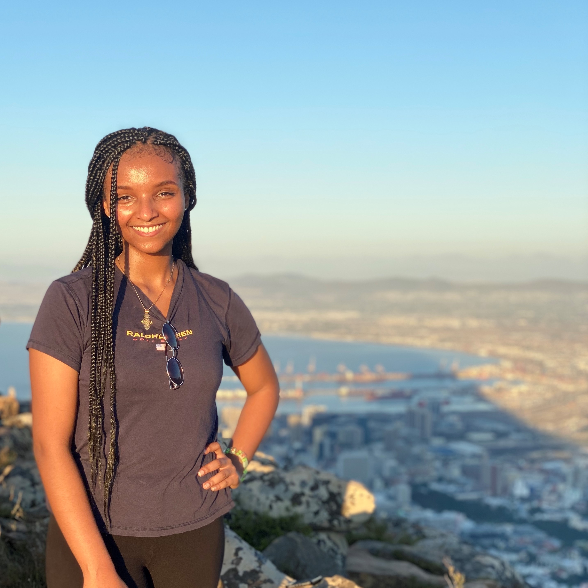
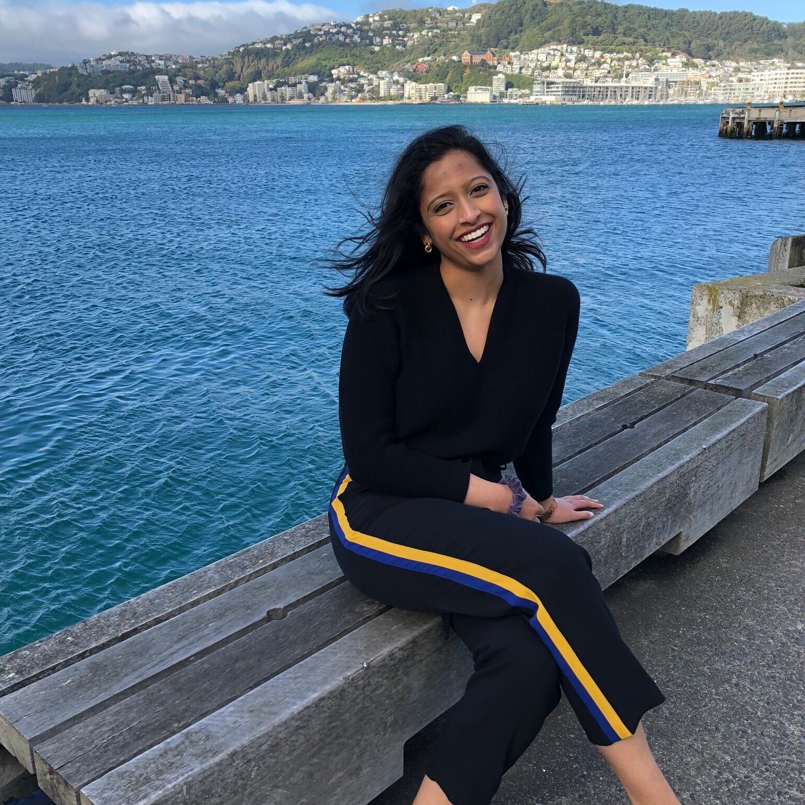

Hi! My name is Maukthika. I graduated from Virginia Tech May 2020 with a Finance and a Business Information Technology degree and am currently working for Deloitte as a Human Capital Analyst. I am currently looking to move into the Strategy arm of the firm and work in data analytics and data visualization. I have interviewed with Capital One, Deloitte, PwC, as well as a few smaller firms and would love to answer any questions about the interview process, resume guidance, or just to chat about any questions you may have about your career!
College: Virginia Tech
Major: Industrial & Systems Engineering
Hobbies: Reading, Exploring new cities, Watercolor painting, Gardening, Cooking
Mentor: Atul Kumar
"Luck is where preparation meets opportunity" -Sir Richard Branson
Hi! I’m Atul Kumar, I graduated in Spring of 2020 with an Industrial and Systems Engineering degree. Currently, I’m working multiple roles at 3 different startups while I await to become a Technology Analyst at Accenture in Chicago, Illinois (where I’m from). My roles at the moment are Global Market Development Manager at Integra Ledger where I’m working on blockchain business strategy, Product Development at Inventables where I’m designing a next generation CNC, and Engagement Strategist at Balodana where we are re-envisioning the entire fashion industry. My primary interest areas and background is in robotics, drone technology, urban air mobility, data analytics, digital twin, and many more. If any of the above matches your interests or if you are interested in talking to me, feel free to contact me. I’m very open to helping out with interviews, career guidance, and cultivating hard skill sets to show off.
College: Virginia Tech
Major: Industrial & Systems Engineering
Hobbies: European football (soccer for the americans), travelling (been to 10 countries in the last 10 years), and cooking (can make a mean guacamole)
Mentor: Lauren Fairburn
"If it doesn’t challenge you, it won’t change you"
Hi! My name is Lauren. I graduated from Virginia Tech in Spring of 2020 with a major in Management- Consulting and Analytics and a minor in National Security and Foreign Affairs. I am currently a Foundations Consultant with Protiviti. My goal is to explore and gain exposure to the different solutions Protiviti offers such as Risk and Compliance, Internal Audit, Business Process Improvement and Technology to decide which solution I want to further my career in. I have successfully completed the interview process and received offers from Protiviti, CGI Federal, and Grant Thornton Public Sector. Whether you are looking for someone to walkthrough the interview process with or more knowledge on the different areas of consulting, I would love to help in any way I can!
College: Virginia Tech
Major: Business Information Technology
(concentration: Decision Support Systems)
Hobbies: Working Out, Running, Hiking, Hokie Football and finding new places to explore!
Mentor: Betty Fekadu
"Vision without execution is hallucination" -Thomas Edison

Hey there! My name is Betty. I graduated from Virginia Tech in Spring 2020 and I am currently working as Business Technology Analyst at Deloitte within the Customer & Marketing portfolio. My goal is to work on projects related to UX/UI to further my interest in user design and research. I have successfully completed interviews and received offers from companies like Deloitte (Summer Consulting Externship, Business Technology Analyst Full-Time Offer), Capital One (Summit for Developing Leaders Program), Citigroup (Internal Audit Summer Analyst Program Offer), and KPMG (Future Diversity Leadership Program, Summer 2018/2019 IT Audit Internship and Full-Time Offer). Whether you are looking for someone to walk you through the interview process or just review your resume, I would love to be a resource for you!
College: Virginia Tech
Major: Business Information Technology
(concentration: Decision Support Systems)
Hobbies: Painting, Travelling, Self-care (love a good face or hair mask!), and Binge watching my favorite shows.
Mentor: Felipe Matamoros
"We all die. The goal isn't to live forever, the goal is to create something that will." -Chuck Palahnuik
Hi! My name is Felipe Matamoros and I recently graduated from Virginia Tech as
an Industrial and Systems Engineer. I am looking forward to begin working with EY
within their Business Advisory Practice for Financial Service Organizations. Thus
far, I have interned with EY's Business Advisory Practice, Risk Advisory Practice,
and Transaction Advisory Services on three separate occasions. I have also
directed the case interview process of a student-run consulting group at Virginia
Tech, overseeing the application process of over 200 students. My goal is to
leverage my engineering education and enter the data analytics space within the
consulting industry. If you're looking for assistance with case interviews or with
finding the right service line within the industry, I would love to help!
College: Virginia Tech
Major: Industrial & Systems Engineering
Hobbies: Tennis, Guitar, Soccer, Cooking, Video Games
Mentor: Vaishnavi Somanchi
"If you want to go fast go alone, if you want to go far go together" -African Proverb

Hi my name is Vaish! I graduated from Virginia Tech in Spring 2018 and am currently a technology consultant at PwC within
the Industrial Products and Services vertical. I've had depth of experience in a large tech transformation, working closely
with product owners to understand the industry and solution, while also learning the technology behind it. With my experience
at PwC, as well as my wide network, I'm happy to share my advice and resources!
College: Virginia Tech
Major: Computational Modeling and Data Analytics
Hobbies: City travel and exploring, Cooking, Painting, and Trying new cuisines
Mentor: Daniel Baek
"Don't depend on heaven for food, but on your own two hands carrying the load." -Gladwell
Hi! My name is Daniel. I graduated Virginia Tech in Fall 2019 and am currently a Business Technology Analyst at Deloitte within their Consumer Marketing portfolio. My goal is to enter the UX/UI sphere within the firm and further my interest in design. I have successfully completed the interview process and received offers from Deloitte Consulting, Capital One (CODA Program), Deloitte Advisory (Cyber Risk Internship), KPMG (IT/Audit Internship), and a handful of others. Whether you are looking for an area to find an interest in or in search of someone to walkthrough the interview process with, I would love to be a resource!
College: Virginia Tech
Major: Business Information Technology
(concentration: Decision Support Systems)
Hobbies: Golf, Rock Climbing, Camping, and Reading
Mentor: Matt Garlington
"It is our choices, that show what we truly are, far more than our abilities." -J. K Rowling
Hey there! My name is Matt, and I am a Virginia Tech alumni with a background in Industrial and Systems Engineering. My previous
work experience includes jobs across multiple different industries: Consulting, Government, Automotive, Oil and Gas. Currently, I
am an analyst at Deloitte within their Strategy & Analytics portfolio. My goal here is to utilize data and information, plus a unique
perspective, to help organizations adapt and grow in an ever changing world. If you have questions or are looking for some interview
help, don't hesitate to reach out!
"Some people want it to happen, some wish it would happen, others make it happen."
-Michael Jordan
Hi! My name is Nava. I graduated Virginia Tech in Spring 2020 and am currently a Business Technology Analyst at Deloitte within their Human Capital portfolio. My goal is to enter the Health and Life Sciences sphere within the firm and further my interest in the healthcare industry. I have successfully completed the interview process and received offers from Deloitte Consulting, EY, Protiviti, Booz Allen Hamilton, and a handful of others. Whether you are looking for an area to find an interest in or in search of someone to walkthrough the interview process with, I would love to be a resource!
College: Virginia Tech
Major: Business Information Technology
(concentration: Operation System Management)
Hobbies: Cooking,Baking, Hiking, Basketball, and Watching DC sports
Mentor: Srikar Manjuluri
"Luck is what happens when preparation meets opportunity" - Seneca
Hey, I'm Srikar! I graduated from Virginia Tech in May 2019 with a degree in Industrial and Systems Engineering. I'm currently a Consultant at IBM within the Digital Strategy and iX practice,
focused on digital and business strategy and consumer experience for the Industrial sector. I have experience working at and interviewing with both big (Big 4, Accenture, IBM) and small,
niche consulting firms in various cities and industries and am happy to share my experiences!